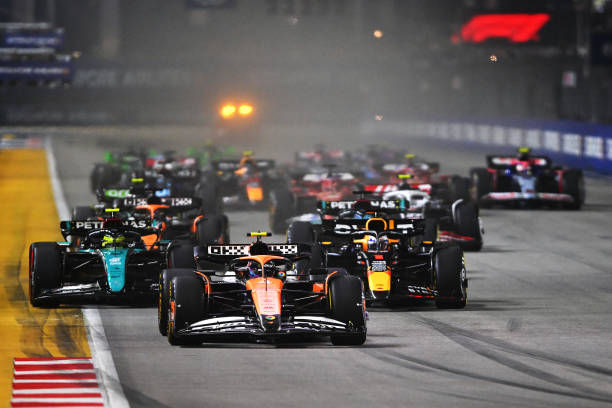
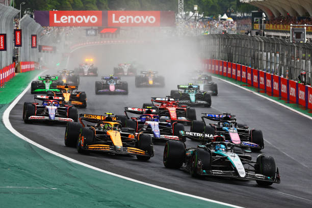
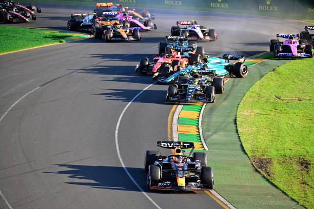
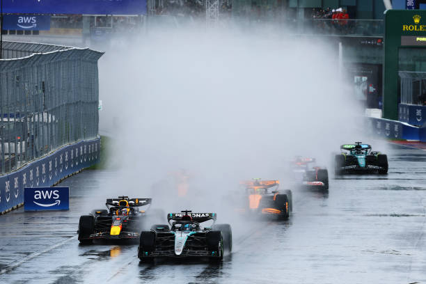
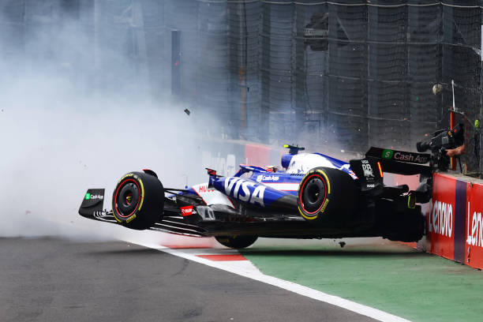

Tracks
Home
Drivers
Tracks
Champions
Extra





Bahrain International Circuit
Jeddah Corniche Circuit
Albert Park Grand Prix Circuit
Suzuka Circuit
Shanghai International Circuit
Miami International Autodrome
Autodromo Internazionale Enzo e Dino Ferrari
Circuit de Monaco
Circuit Gilles-Villeneuve
Circuit de Barcelona-Catalunya
Red Bull Ring
Silverstone Circuit
Hungaroring
Circuit de Spa-Francorchamps
Circuit Zandvoort
Autodromo Nazionale Monza
Baku City Circuit
Marina Bay Street Circuit
Circuit of The Americas
Autódromo Hermanos Rodríguez
Autódromo José Carlos Pace
Las Vegas Strip Circuit
Lusail International Circuit
Yas Marina Circuit